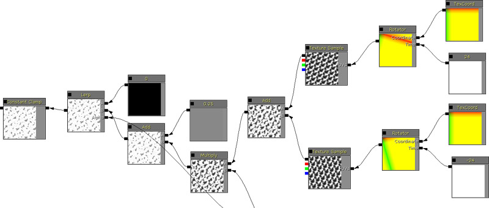

UDN
Search public documentation:
DevelopmentKitGemsRealTimeDeformation
日本語訳
中国翻译
한국어
Interested in the Unreal Engine?
Visit the Unreal Technology site.
Looking for jobs and company info?
Check out the Epic games site.
Questions about support via UDN?
Contact the UDN Staff
中国翻译
한국어
Interested in the Unreal Engine?
Visit the Unreal Technology site.
Looking for jobs and company info?
Check out the Epic games site.
Questions about support via UDN?
Contact the UDN Staff
UE3 Home > Unreal Development Kit Gems > Real Time Deformation
UE3 Home > Materials & Textures > Real Time Deformation
UE3 Home > Materials & Textures > Real Time Deformation
Real Time Deformation
Last tested against UDK June, 2011
PC with DX11 only
Overview
With the introduction of DirectX 11 into UDK, real time tessellation and displacement was added to dramatically improve the visual quality of Unreal rendered scenes. Displacement in DirectX 11 is more powerful than the World Position Offset as it capable of using texture samplers. This alone makes vertex displacement more interesting. In this gem, we will discuss how to create a surface which can deform based on game play interactions. In this screen shot, all of deformations is done in real time using the Link Gun. There is also two different types of materials, with the metal wall bending where the Link projectiles impacted. The floor is uses a rock diffuse, and when deformed it will pan a slime layer which also displaces the surface with a wavy style simulation. Note: DirectX 11 is required if you wish to use vertex displacement, but it is not needed if you just want to paint the surface of the mesh with a texture without having to use decals. Since DirectX 11 is disabled if the player doesn't have a DirectX 11 capable card, the shader will automatically turn it off.
Technical Setup
This gem is comprised of two technologies working in tandem to produce the real time deformation. A hit mask is used to store all the deformations applied to the surface. This component will automatically transform world coordinates near the surface into the UV space coordinates and then draw a circle into the render target. Using the hit masks within the material, we can interpolate between two operations which comprise of the normal state and the damaged state. Lastly, Unrealscript collects altogether so that it can be used with script based interactions.
SceneCapture2DHitMaskComponent
Normally you would use the hit mask component with specific texture coordinates as defined in the documentation. Unfortunately this texture coordinate set up is incompatible with DirectX 11's WorldDisplacement node. However with experimentation it was found that if a single plane referenced the entire UV coordinate set ([0.f - 1.f] in both axis) it was possible to use the hit mask render target by simply shifting the look up coordinates to just use [0.5f - 1.f] x [ 0.f - 1.f]. This does restrict the use of this gem to flat surfaces however.Material
The material system uses the hit mask component's render target as a mask to perform linear interpolation between different shader branches representing the deformed and non deformed areas. Here are the nodes which simply sample the hit mask component's render target. The modified texture coordinates offset the effects of having to use Unmirror U which is normally required when using hit mask component. Only the red channel is used for interpolation purposes as the other channels do not provide any useful information. Here are the nodes which add the noise to the hit mask component's render target. Hit mask component's only place white circles which are pretty boring by themselves. By adding noise multiplied with these white circles, more interesting deformation is applied in the end.  Here are the displacement vectors used by the material to apply to the material in question. These are set to 0.f, 0.f, 0.f, 1.f by default because Unrealscript changes these. It's important to use rotation orientated displacement vectors here otherwise the direction of the displacement will be incorrect. These vectors are set in Unrealscript. From here the rest of the material does not have any other special areas to mention. The diffuse, specular, specular power, normal and so forth should all use the noisy hit mask component render target for interpolation purposes so that the result of the deformation is even more pronounced.Unrealscript
Unrealscript here is used to bind the technologies together. When this actor is first created in the world, it will execute PostBeginPlay(). PostBeginPlay is equivalent to the constructor paradigm present in C++. In PostBeginPlay a render target is first created for the hit mask component to use. Optionally, you can make damage fade away by setting a positive value in SetFadingStartTimeSinceHit. This would allow the "surface" to return to normal over time and may be useful for things such as organic wall surfaces. After that, a material instance constant is created for the skeletal mesh, by using CreateAndSetMaterialInstanceConstant. The material instance constant that was created, then has the hit mask parameter set to the render target created before hand. Lastly the displacement vectors are then set based on the rotation of the actor. When the actor is destroyed, Destroyed is executed. To facilitate garbage collection, any object references are set to none. When the actor takes damage, TakeDamage is executed. Here is where the hit mask component is updated so that real time deformation occurs when the actor is being shot at by the Link Gun (or any other gun). A simple effect is done here, and it can be expanded to simulate other kinds of weapons, smaller or larger dents. The sky is the limit basically. The default properties simply create all of the objects required and ensures that the actor is blocking and collidable.
class DX11DeformableMesh extends Actor
placeable;
var() const LightEnvironmentComponent LightEnvironmentComponent;
var() const SkeletalMeshComponent SkeletalMeshComponent;
var() const SceneCapture2DHitMaskComponent SceneCapture2DHitMaskComponent;
var() const IntPoint HitMaskSize;
var() const Name HitMaskMaterialParameterName;
var() const Name MinimumDisplacementParameterName;
var() const Name MaximumDisplacementParameterName;
var() const float MinimumDisplacement;
var() const float MaximumDisplacement;
var TextureRenderTarget2D HitMaskRenderTarget;
simulated function PostBeginPlay()
{
local MaterialInstanceConstant MaterialInstanceConstant;
local LinearColor LC;
local Vector V;
Super.PostBeginPlay();
HitMaskRenderTarget = class'TextureRenderTarget2D'.static.Create(HitMaskSize.X, HitMaskSize.Y, PF_G8, MakeLinearColor(0, 0, 0, 1));
if (HitMaskRenderTarget != None)
{
SceneCapture2DHitMaskComponent.SetCaptureTargetTexture(HitMaskRenderTarget);
SceneCapture2DHitMaskComponent.SetFadingStartTimeSinceHit(-1.f);
if (SkeletalMeshComponent != None)
{
MaterialInstanceConstant = SkeletalMeshComponent.CreateAndSetMaterialInstanceConstant(0);
if (MaterialInstanceConstant != None)
{
MaterialInstanceConstant.SetTextureParameterValue(HitMaskMaterialParameterName, HitMaskRenderTarget);
V = Vector(Rotation);
V *= MinimumDisplacement;
LC.R = V.X;
LC.G = V.Y;
LC.B = V.Z;
MaterialInstanceConstant.SetVectorParameterValue(MinimumDisplacementParameterName, LC);
V = Vector(Rotation);
V *= MaximumDisplacement;
LC.R = V.X;
LC.G = V.Y;
LC.B = V.Z;
MaterialInstanceConstant.SetVectorParameterValue(MaximumDisplacementParameterName, LC);
}
}
}
}
simulated function Destroyed()
{
Super.Destroyed();
SceneCapture2DHitMaskComponent.SetCaptureTargetTexture(None);
HitMaskRenderTarget = None;
}
simulated function TakeDamage(int DamageAmount, Controller EventInstigator, vector HitLocation, vector Momentum, class<DamageType> DamageType, optional TraceHitInfo HitInfo, optional Actor DamageCauser)
{
Super.TakeDamage(DamageAmount, EventInstigator, HitLocation, Momentum, DamageType, HitInfo, DamageCauser);
SceneCapture2DHitMaskComponent.SetCaptureParameters(HitLocation, 16.f, HitLocation, false);
}
defaultproperties
{
Begin Object Class=ArrowComponent Name=Arrow
ArrowColor=(R=150,G=200,B=255)
bTreatAsASprite=True
End Object
Components.Add(Arrow)
Begin Object Class=DynamicLightEnvironmentComponent Name=MyDynamicLightEnvironmentComponent
End Object
LightEnvironmentComponent=MyDynamicLightEnvironmentComponent
Components.Add(MyDynamicLightEnvironmentComponent)
Begin Object Class=SkeletalMeshComponent Name=MySkeletalMeshComponent
LightEnvironment=MyDynamicLightEnvironmentComponent
bHasPhysicsAssetInstance=true
CollideActors=true
BlockActors=true
BlockZeroExtent=true
BlockNonZeroExtent=true
BlockRigidBody=true
End Object
SkeletalMeshComponent=MySkeletalMeshComponent
CollisionComponent=MySkeletalMeshComponent
Components.Add(MySkeletalMeshComponent);
Begin Object Class=SceneCapture2DHitMaskComponent Name=MySceneCapture2DHitMaskComponent
End Object
SceneCapture2DHitMaskComponent=MySceneCapture2DHitMaskComponent
Components.Add(MySceneCapture2DHitMaskComponent)
CollisionType=COLLIDE_BlockAll
BlockRigidBody=true
bCollideActors=true
bBlockActors=true
HitMaskSize=(X=512,Y=512)
HitMaskMaterialParameterName="HeightMask"
}
How to use DX11DeformableMesh in game
Using DX11DeformableMesh in game is as simple as using any other actor in Unreal Engine 3. Find the actor within the Content Browser, Actor Classes tab. Once selected in the Content Browser, you can then right click within the game viewport and add it to the world. From there, properties need to be set. You'll need to set the skeletal mesh component properties such as skeletal mesh, physics asset and material. Then you may want to tweak some of the deformation properties. Ensure that the material parameter names match with the material you're using. Lastly, you will need to ensure that the actor's facing direction points where the deformed surface is. The arrow helps to ensure that you orient them correctly. The plane mesh that is used also ensures this, but a plane is not strictly required for this technique to work. You can for example, make a mesh where not all portions are deformable.
Conclusion
By using multiple technologies together, it is possible to create interest new technology that can enhance your game and make it stand out from the crowd.
Downloads
- Download the content used for this gem.

{kind=link}